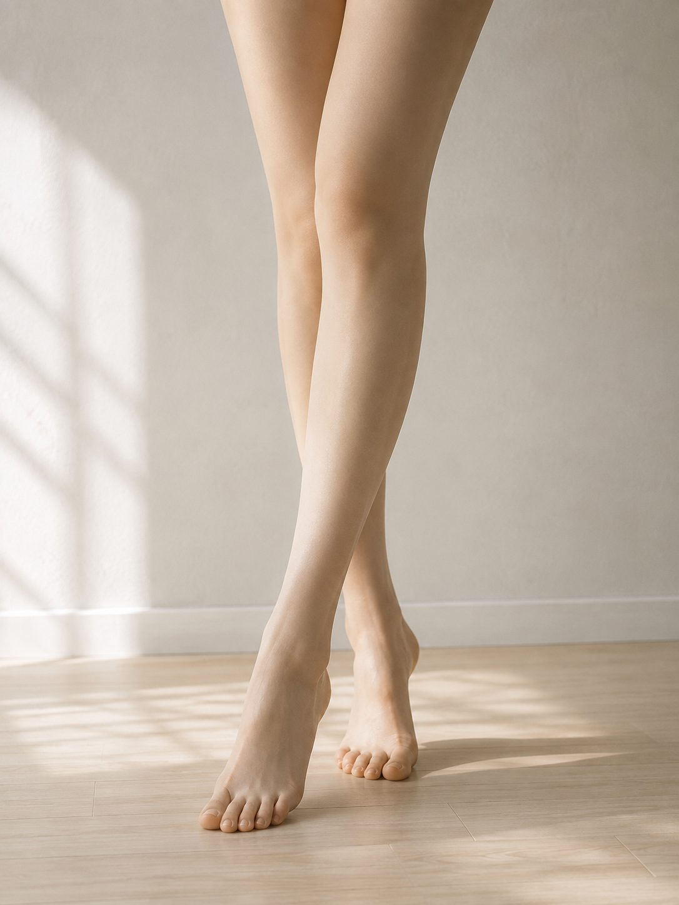

「体重は変わらないのに、顔と上半身が重い」

その対処、少しだけズレています。
プレ花嫁のむくみが治らない理由
むくみ＝水分や塩分の問題、と思われがちですが、 実際の花嫁さんの体ではそれだけではありません。
むくみを悪化させる3つの要因
- 食事制限による軽い炎症
- 緊張・ストレスによる血流低下
- 呼吸が浅くなることによる循環不良
ドレス前に軽く見せるための整え方
【3週間前】むくみ体質を作らない準備
- 極端な糖質・脂質カットをやめる
- 体を温める食事を意識する
今日からできる！
「むくみ」リセット3ステップ
水を控えるのはNGです。
「循環」を意識して、溜まった水を流しましょう。
STEP 1
カリウムで「水はけ」を良くする
塩分を控えつつ、余分なナトリウムを排出する「カリウム」を意識して摂りましょう。
アボカド、バナナ、きゅうり、キウイなどがおすすめ。水分を抜くのではなく、食材の力で循環を促します。
STEP 2
鎖骨の「ゴミ箱」を空にする
全身のリンパの最終出口は「鎖骨」にあります。
ここが詰まっていると、顔や腕のマッサージをしても効果が半減します。鎖骨のくぼみを指で優しく5回ほどプッシュしてからケアを始めましょう。
STEP 3
湯船の水圧で「押し戻す」
シャワーで済ませず、湯船に浸かりましょう。
お湯の「水圧」が天然の着圧ソックスとなり、末端に溜まった血液や水分を心臓へ押し戻してくれます。
ぬるめのお湯にゆっくり浸かるのがポイントです。
よくある質問
Q. 水を控えるとむくみは取れますか？Click!
A. 一時的に減っても、体は逆に溜め込みやすくなります。
Q. 塩分を完全に抜くのはNG？Click!
A. 血流低下につながり、顔色が悪く見えることがあります。
Q. マッサージだけで解決できますか？Click!
A. 一時的には効果がありますが、食事と併用が重要です。
他の部位も整えたいですか？
ドレス姿を美しくするのは、一箇所だけではありません。
気になる部位を合わせてチェックしてみてください。
どうしてもむくみが取れない時
セルフケアでは限界がある「頑固なむくみ」や、挙式直前の「即効性」を求めるなら、
エステの専用マシン（EMSやラジオ波）に頼るのが確実です。
栄養士が厳選した
「直前駆け込みOK」なエステ・ジム特集
「部分的に直す」より、 花嫁としての全体バランスを整えたい方へ。
無料の花嫁ダイエット序章を読む